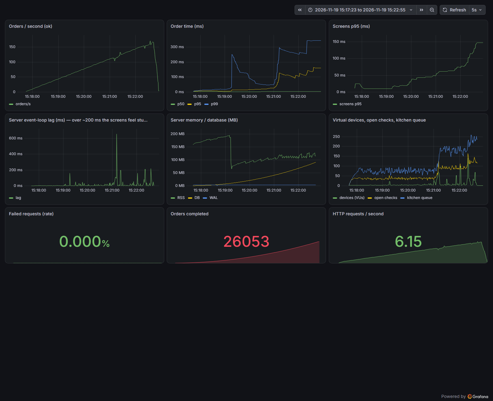

Generated from the raw files in this folder. Version 1.0.7 + fixes from this run. All numbers are real outputs; nothing is typed by hand.
| Scenario | Before fix | After fix | Measured |
|---|---|---|---|
| race.add_order_vs_close | FAIL | PASS | {"httpStatus": 400, "closedCheckUnpaidCents": 0, "orderLandedOnNewCheckCents": null} |
| race.discount_vs_close | FAIL | PASS | {"httpStatus": 400, "totalAtClose": 10000, "totalAfter": 10000, "discountAfter": 0} |
| race.void_item_vs_close | FAIL | PASS | {"httpStatus": 400, "totalAtClose": 10000, "totalAfter": 10000, "paid": 10000} |
| race.split_vs_close | FAIL | PASS | {"httpStatus": 400, "openChecksAfter": 0} |
| race.double_confirm_transfer | FAIL | PASS | {"secondHttpStatus": 400, "drawerEntries": 1, "drawerSum": 10000}added after the fix; same load-before-body pattern as the other race bugs |
| race.double_register_open | FAIL | PASS | {"secondHttpStatus": 400, "openShifts": 1}added after the fix; same load-before-body pattern as the other race bugs |
| race.merge_vs_close | FAIL | PASS | {"httpStatus": 400, "sourceStatusAfter": "closed"} |
| flood.300_orders_same_check | PASS | PASS | {"errors": 0, "ms": 3323, "subtotal": 3000000, "expected": 3000000, "uniqueOrderNumbers": true} |
| flood.same_table_open | PASS | PASS | {"openChecks": 1} |
| flood.double_payment | PASS | PASS | {"succeeded": 1, "rejected": 19, "paid": 20000, "drawerSales": 20000} |
| flood.close_vs_void | PASS | PASS | {"outcomes": ["close-failed", "void"], "finalStatus": "void"} |
| flood.websockets_400 | PASS | PASS | {"messagesReceived": 100021, "writeMsFor100Orders": 12083, "infoLatencyMs": 85, "rssMB": 280} |
| dos.slowloris_1000 | PASS | PASS | {"infoLatencyMs": 1} |
| inventory.void_pending_qr_order | FAIL | PASS | {"stockAfter": 1000.0, "expected": 1000} |
| inventory.void_accepted_order | PASS | PASS | {"stockAfter": 500.0} |
| money.max_values | PASS | PASS | {"subtotal": 1188000000000, "total": 2673000000000, "expectedTotal": 2673000000000} |
| money.absurd_numbers | PASS | PASS | {"negativeDiscountStatus": 400, "infinityAmountStatus": 400, "total": 0} |
| money.confirm_overpayment | FAIL | PASS | {"httpStatus": 400, "overpaidCents": -5000} |
| authz.matrix | PASS | PASS | {"checks": 134, "leaks": []} |
| security.sql_injection | PASS | PASS | {"problems": []} |
| fuzz.wrong_types | FAIL | PASS | {"requests": 564, "serverErrors": 0, "dbIntegrity": "ok"} |
| fuzz.qr_messages | PASS | PASS | {"messages": 500, "threwInsideIngest": 116, "ordersWithoutItems": 0, "dbIntegrity": "ok"}a throw is caught by CloudSync._handle and the message is deleted |
| qr.flood | PASS | PASS | {"replayStored": 1, "sameClientAccepted": 5, "rotatingClientIdsPending": 0, "pendingOnTheTable": 6}the per-phone id is chosen by the phone, so there is also a per-table limit (6 waiting, 15 per 10 min) |
| dos.huge_unauth_body | FAIL | PASS | {"httpStatus": 413, "rssGrowthMB": 7, "peakRssMB": 377} |
| dos.image_bomb | FAIL | PASS | {"fileKB": 117, "decodedMegapixels": 100, "ms": 6, "peakRssGrowthMB": 95, "refused": true} |
| security.bruteforce_lock | PASS | PASS | {"lockedAfter": 5} |
| restore.garbage_db | FAIL | PASS | {"httpStatus": 400}if staged, the server cannot start again after restart |
| restore.zip_slip | PASS | PASS | {"escapedFiles": []} |
| resilience.corrupt_db | INFO | INFO | {"started": false, "error": "ApiError(500): قاعدة البيانات بايظة ومفيش نسخة احتياطية سليمة نرجع لها. الملف البايظ اتحفظ في C:\\Users\\ahmed\\AppData\\Local\\Temp\\orderly_stress25615749\\corrupt-2026-11-19T17-50-20. كلم الدعم الفني ومتمسحش الفولدر ده"} |
| resilience.stop_under_load | PASS | PASS | {"completedBeforeStop": 18, "ordersStored": 200, "halfOrders": 0, "dbIntegrity": "ok"} |
| Run | Requests | Rate | Orders ok | Order time med / p95 / max | Screens p95 | http_req_failed | Server errors | |
|---|---|---|---|---|---|---|---|---|
| ramp-1.0.7-fixed | 58865 | 195/s | 25804 | 3 / 96 / 1339 ms | 33 ms | 0.000% | 0 | k6 report |
| ramp-final | 54143 | 179/s | 24026 | 29 / 1271 / 2065 ms | 316 ms | 0.000% | 0 | k6 report |
| ramp-monitored | 59053 | 196/s | 26053 | 5 / 161 / 1394 ms | 94 ms | 0.000% | 0 | k6 report |
| spike-1.0.7-fixed | 40574 | 340/s | - | 844 / 1473 / 2098 ms | 3503 ms | 0.039% | 16 | k6 report |
| spike-after-perf | 40859 | 342/s | - | 804 / 1538 / 1884 ms | 3407 ms | 0.047% | 19 | k6 report |
| spike-before-perf | 38054 | 315/s | - | 872 / 1690 / 4424 ms | 3693 ms | 0.058% | 22 | k6 report |
before = before the round-3 performance fixes; after / after-n1 = after them. Same laptop; runs vary about ±30%.
| Endpoint | before | after | after-n1 |
|---|---|---|---|
| GET /api/floor | 4.12 | 1.46 | 1.31 |
| GET /api/kds | 8.24 | 2.47 | 2.14 |
| GET /api/live | 1.22 | 1.06 | 1.04 |
| GET /api/checks | 3.59 | 1.61 | 1.46 |
| GET /api/info (no auth) | 0.97 | 1.03 | 0.94 |
| POST order | 3.47 | 3.31 | 4.56 |
| Series | Max | Average |
|---|---|---|
| orders_per_sec | 163.0 | 84.9 |
| order_time_p95_ms | 165.0 | 48.2 |
| screen_time_p95_ms | 147.0 | 43.7 |
| http_failed_rate | 0.0 | 0.0 |
| vus | 101.0 | 10.1 |
| server_loop_lag_ms | 109.0 | 8.0 |
| server_rss_mb | 193.0 | 127.1 |
| db_mb | 88.4 | 30.9 |
| open_checks | 124.0 | 55.0 |
| kds_orders | 259.0 | 106.9 |

passed: 42 — Playwright report. BLOCKED = the Firefox build on this PC does not start (environment).
| Test | Browser | Result |
|---|---|---|
| loads the real menu in Arabic, right-to-left | chromium-android | passed |
| loads the real menu in Arabic, right-to-left | webkit-iphone | passed |
| loads the real menu in Arabic, right-to-left | firefox-phone | passed |
| required size, quantity and extras: price math matches the server | chromium-android | passed |
| required size, quantity and extras: price math matches the server | webkit-iphone | passed |
| required size, quantity and extras: price math matches the server | firefox-phone | passed |
| contact validation, then an order the real server accepts | chromium-android | passed |
| contact validation, then an order the real server accepts | webkit-iphone | passed |
| contact validation, then an order the real server accepts | firefox-phone | passed |
| wallet payment: needs a screenshot, a 12 MP photo is shrunk under the Firebase 1.2 MB limit | chromium-android | passed |
| wallet payment: needs a screenshot, a 12 MP photo is shrunk under the Firebase 1.2 MB limit | webkit-iphone | passed |
| wallet payment: needs a screenshot, a 12 MP photo is shrunk under the Firebase 1.2 MB limit | firefox-phone | passed |
| takeaway QR: no waiter button, order still goes through | chromium-android | passed |
| takeaway QR: no waiter button, order still goes through | webkit-iphone | passed |
| takeaway QR: no waiter button, order still goes through | firefox-phone | passed |
| wrong / old table code | chromium-android | passed |
| wrong / old table code | webkit-iphone | passed |
| wrong / old table code | firefox-phone | passed |
| cafe paused mobile ordering: menu visible, sending disabled | chromium-android | passed |
| cafe paused mobile ordering: menu visible, sending disabled | webkit-iphone | passed |
| cafe paused mobile ordering: menu visible, sending disabled | firefox-phone | passed |
| cashier PC off for an hour: offline banner | chromium-android | passed |
| cashier PC off for an hour: offline banner | webkit-iphone | passed |
| cashier PC off for an hour: offline banner | firefox-phone | passed |
| internet drops while sending: error shown, cart kept, can retry | chromium-android | passed |
| internet drops while sending: error shown, cart kept, can retry | webkit-iphone | passed |
| internet drops while sending: error shown, cart kept, can retry | firefox-phone | passed |
| Firebase down when the page opens: clear message, no crash | chromium-android | passed |
| Firebase down when the page opens: clear message, no crash | webkit-iphone | passed |
| Firebase down when the page opens: clear message, no crash | firefox-phone | passed |
| very slow network (4 s per request): menu still opens | chromium-android | passed |
| very slow network (4 s per request): menu still opens | webkit-iphone | passed |
| very slow network (4 s per request): menu still opens | firefox-phone | passed |
| XSS: item names and staff-written reasons are shown as text | chromium-android | passed |
| XSS: item names and staff-written reasons are shown as text | webkit-iphone | passed |
| XSS: item names and staff-written reasons are shown as text | firefox-phone | passed |
| huge menu: 60 categories × 25 items renders quickly | chromium-android | passed |
| huge menu: 60 categories × 25 items renders quickly | webkit-iphone | passed |
| huge menu: 60 categories × 25 items renders quickly | firefox-phone | passed |
| corrupted phone storage does not break the page | chromium-android | passed |
| corrupted phone storage does not break the page | webkit-iphone | passed |
| corrupted phone storage does not break the page | firefox-phone | passed |
| Test | Browser | Result | Order | Page total / server total (piastres) | Proof KB |
|---|---|---|---|---|---|
| order | chromium-android | PASS | pending | None / 8500 | None |
| takeaway | chromium-android | PASS | pending | None / 8500 | None |
| wallet+proof | chromium-android | PASS | pending | 8500 / 8500 | 284 |
| order | firefox-phone | PASS | pending | None / 8500 | None |
| takeaway | firefox-phone | PASS | pending | None / 8500 | None |
| wallet+proof | firefox-phone | PASS | pending | 8500 / 8500 | 478 |
| order | webkit-iphone | PASS | pending | None / 8500 | None |
| takeaway | webkit-iphone | PASS | pending | None / 8500 | None |
| wallet+proof | webkit-iphone | PASS | pending | 8500 / 8500 | 459 |
| Scenario | Result | Evidence | |
|---|---|---|---|
| connect by IP + login (device id sent) [release] | PASS | floor shown; server كافيه التيست | screenshot |
| order with required size + extras [release] | PASS | phone 125 EGP, server 12500 piastres | screenshot |
| another device adds an order → phone updates live [release] | PASS | new total visible within 10 s, no refresh | screenshot |
| Wi-Fi cut: lasting banner, draft kept, reconnect, no duplicate [release] | PASS | banner after 3s, still shown 6s after the failed send: True, draft kept: True, banner gone 4s after Wi-Fi back, server orders: 3 | screenshot |
| check closed on another device → unsent items sent to a new check [release] | PASS | old check closed, new check on table 1 = 6500 piastres (expected 6500) | screenshot |
| rotate + 6 s in background [release] | PASS | landscape floor: True, still logged in after resume: True | |
| GPRS network (7 KB/s): open table + send order [release] | PASS | 6.1s end to end | screenshot |
| app open: order ready → side notice (with sound) [release] | PASS | notice 'طلب #… جاهز' shown on the right | screenshot |
| print failed → red notice for the cashier [release] | PASS | notice 'الطباعة فشلت …' shown | screenshot |
| Android background service keeps the connection (lock screen) [release] | PASS | foreground service running: True, fixed notification shown: True | |
| app in background: system notification + our sound; tap opens Orders [release] | PASS | in tray: True, channel sound order_ready: True, tap brought the app back: True | screenshot |
| connect by IP + login (device id sent) [debug] | PASS | floor shown; server كافيه التيست | screenshot |
| order with required size + extras [debug] | PASS | phone 125 EGP, server 12500 piastres | screenshot |
| another device adds an order → phone updates live [debug] | PASS | new total visible within 10 s, no refresh | screenshot |
| Wi-Fi cut: lasting banner, draft kept, reconnect, no duplicate [debug] | PASS | banner after 3s, still shown 6s after the failed send: True, draft kept: True, banner gone 4s after Wi-Fi back, server orders: 3 | screenshot |
| check closed on another device → unsent items sent to a new check [debug] | PASS | old check closed, new check on table 1 = 6500 piastres (expected 6500) | screenshot |
| rotate + 6 s in background [debug] | PASS | landscape floor: True, still logged in after resume: True | |
| GPRS network (7 KB/s): open table + send order [debug] | PASS | 4.9s end to end | screenshot |
| app open: order ready → side notice (with sound) [debug] | PASS | notice 'طلب #… جاهز' shown on the right | screenshot |
| print failed → red notice for the cashier [debug] | PASS | notice 'الطباعة فشلت …' shown | screenshot |
| Android background service keeps the connection (lock screen) [debug] | PASS | foreground service running: True, fixed notification shown: True | |
| app in background: system notification + our sound; tap opens Orders [debug] | PASS | in tray: True, channel sound order_ready: True, tap brought the app back: True | screenshot |
The "SQL Injection" alert was checked by hand and is a false positive (see SUMMARY.md); X-Powered-By was removed after this scan.
| Risk | Alert | Count | Example |
|---|---|---|---|
| High (Medium) | SQL Injection | 1 | http://127.0.0.1:18795/api/checks/8f6caf25-be89-4c48-9be7-09256072d831/customer |
| Low (Low) | Cross Site Scripting Weakness (Persistent in JSON Response) | 8 | http://127.0.0.1:18795/api/checks |
| Informational (High) | Authentication Request Identified | 1 | http://127.0.0.1:18795/api/auth/login |
| Informational (Medium) | User Agent Fuzzer | 3 | http://127.0.0.1:18795/api/auth/login |